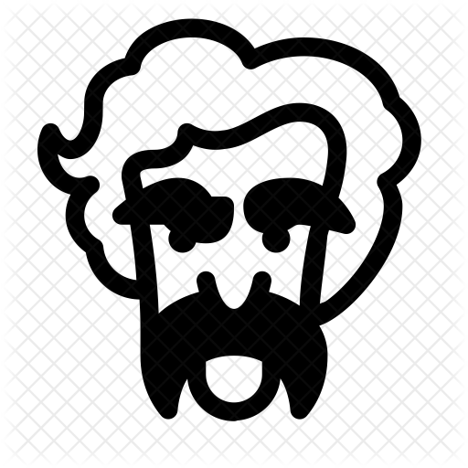

Описание
Считается, что именно Марк Твен когда-то придумал биржевые термины «быки» и «медведи»; также говорят, что
ему принадлежат афоризмы: «Не откладывай на завтра то, что можно отложить на послезавтра», и «Бросить
курить очень просто — я делал это тысячи раз», и «Лучше молчать и показаться дураком, чем заговорить и
развеять все сомнения», и «Если вы заметили, что оказались на стороне большинства, это верный признак,
что пора меняться». Ему приписывают (зачастую ошибочно) практически все известные изречения, от «лжи,
большой лжи и статистики» до «патриотизма — последнего прибежища негодяев».
Говорят, что Марк Твен, будучи редактором газеты, получил пачку плохих стихов под заголовком «Почему я
живой?» и ответил автору: «Потому что прислали стихи по почте, а не пришли в редакцию лично». Как-то раз
Марк Твен, болея, попросил у сиделки еды и получил ложечку бульона; проглотив его, сказал: «Вот я и
поел, а теперь принесите мне что-нибудь почитать, почтовую марку, что ли...» На вопрос, поет ли он, Марк
Твен отвечал: «Те, кто меня слышали, говорят, что нет». Как-то раз Марк Твен написал об одном человеке:
«Он не заслуживает даже того, чтобы плюнуть ему в лицо», тот потребовал опровержения, Марк Твен
согласился: «Он заслуживает того, чтобы плюнуть ему в лицо».
Анекдотам о нем счет ведется на сотни, если не на тысячи, и если не знаете, кто сочинил ту или иную
остроту, называйте его — в двух случаях из трех не ошибетесь.
Цитаты

"Задайтесь целью ежедневно делать то, что вам совсем не по душе. Это золотое правило поможет вам
выполнить свой долг без отвращения".
"Когда сомневаешься, говори правду".
"«Классика» — это книга, которую восхваляют — и не читают".
"Ничто так не нуждается в исправлении, как чужие привычки".
"Банкир — это человек, который одолжит вам зонтик в солнечную погоду, чтобы забрать его, как только
начинается дождь".
"Единственный способ сохранить здоровье — это есть то, чего не хочешь, пить то, чего не любишь, и
делать то, что не нравится".
"Давайте жить так, чтобы даже гробовщик пожалел о нас, когда мы умрем".
"Правда невероятнее вымысла, потому что вымысел обязан держаться в рамках правдоподобия, а правда —
нет".
"Хорошее воспитание — это умение скрывать, как много мы думаем о себе и как мало о других".
"Легче вынести десяток порицаний, чем выслушать одну сомнительную похвалу".
"Истина — самое ценное, что у нас есть. Давайте её экономить".
"Ничто так не нуждается в исправлении, как чужие привычки".
"Будьте осторожны, когда читаете книги о здоровье: опечатка может стоить вам жизни".
"Дружба — это такое святое, сладостное, прочное и постоянное чувство, что его можно сохранить на всю
жизнь, если только не пытаться просить денег взаймы".
"Курить бросить легко. Я сам бросал тысячу раз".
"Самый лучший способ встряхнуть себя — это встряхнуть кого-нибудь другого".
"Люди, у которых есть своё горе, умеют утешать других".
"Не откладывай на завтра то, что можешь отложить на послезавтра".
"Требуется более трёх недель, чтобы подготовить хорошую речь экспромтом".
"Худшее одиночество — это когда человеку неуютно с самим собой".
"Человечество обладает одним поистине мощным оружием, и это — смех".
"Я никогда не позволял школе вмешиваться в моё образование".